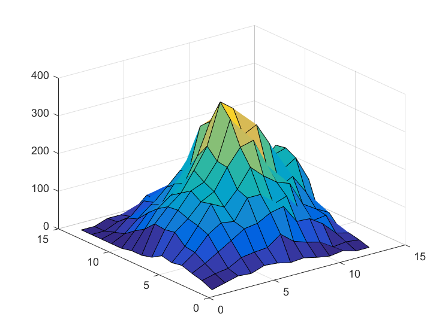

Contents
function [] = plot_out_signals()
PLOT_OUT_SIGNALS
Summary of this function goes here.
- Syntax
[] = PLOT_OUT_SIGNALS()
- Input
-- INPUTARGS -
- Output
-- OUTPUTARGS -
- Examples:
Provide sample usage code here
- See also:
List related files here
- Author: Dmitrii Leliuhin
- Email: dleliuhin@mail.ru
- Date: 31/03/2019 15:18:11
- Version: 1.0 $
- Requirements: PCWIN64, MatLab R2016a
- Warning:
- Warnings list.
- TODO:
- TODO list.
Code
clc; clear all; close all; y.rows = 14; y.cols = 13; file_name_1 = '../results/method_1.xls'; file_name_2 = '../results/method_2.xls'; Y_1 = zeros(y.rows, y.cols); Y_2 = zeros(y.rows, y.cols); xls_range_1 = 'A23:M36'; xls_range_2 = 'A975:M988'; Y_1 = xlsread(file_name_1, xls_range_1); Y_2 = xlsread(file_name_2, xls_range_2); %figure; title('Метод 1. Вычисление дискретной свертки.', 'FontSize', 18); surf(Y_1); snapnow; saveas(gcf, '../results/method_1', 'jpg'); %figure; title('Метод 2. Суммирование взвешенных и сдвинутых импульсных откликов.', ... 'FontSize', 18); surf(Y_2); snapnow; saveas(gcf, '../results/method_2', 'jpg'); %save('../results/workspace.mat'); close all;
end